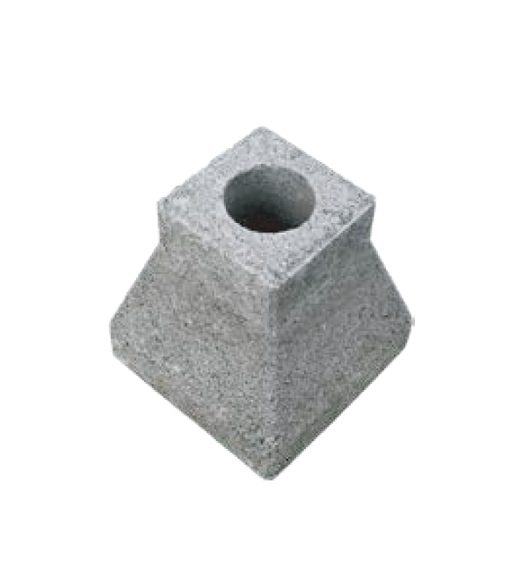

콘크리트 블록 · 벽돌 · 주춧돌
제주 주춧돌 — 시멘트 블럭 주춧돌 공급
기둥 밑을 받치는 시멘트 블럭 주춧돌. 상부에 원형 구멍이 있으며 개당 공급합니다.

- 제품명
- 주춧돌 (시멘트 블럭)
- 제조사 · 브랜드
- 견적 시 안내
- 판매·공급원
- (주)아인산업안전
- 판매지역
- 제주특별자치도
주춧돌 (시멘트 블럭) 규격
제조사 자료 기준입니다.
| 형태 | 사각뿔대형, 상부 원형 구멍 |
|---|---|
| 판매 단위 | 개당 |
특징
- 데크·창고·가설 구조물의 기둥 받침으로 씁니다.
- 치수는 쇼핑몰 상세페이지의 도면을 참고해 주세요.
제주도 납품 안내
- 판매지역 — 제주특별자치도 전 지역(제주시·서귀포시·읍면) 현장으로 납품합니다. 제주도 밖으로는 판매하지 않습니다.
- 주문 방법 — 전화(1660-4019) 또는 견적문의로 규격·수량·납품지를 알려주세요. 이 사이트에서는 결제를 받지 않습니다.
- 가격·배송 — 수량과 납품지, 하차 조건에 따라 견적으로 안내합니다. 세금계산서 발행이 가능합니다.
- 시공이 필요하면 — 경계석·안전시설 설치가 함께 필요하면 안전시설 시공까지 한 번에 견적을 드립니다.


자주 묻는 질문
제주에서 주춧돌 (시멘트 블럭)을(를) 살 수 있나요?
네. (주)아인산업안전이 운영하는 제주안전시설에서 제주특별자치도 내 현장으로 판매·납품합니다. 필요한 규격과 수량, 납품지를 알려주시면 견적을 드립니다. 전화 1660-4019.
주춧돌 (시멘트 블럭) 규격은 어떻게 되나요?
형태: 사각뿔대형, 상부 원형 구멍 / 판매 단위: 개당.
주춧돌 (시멘트 블럭)의 제조사는 어디인가요?
견적 시 안내. 판매·공급원은 (주)아인산업안전입니다.
가격은 얼마인가요?
수량과 납품지(제주도 내), 하차 조건에 따라 달라져 견적으로 안내합니다. 세금계산서 발행이 가능합니다.